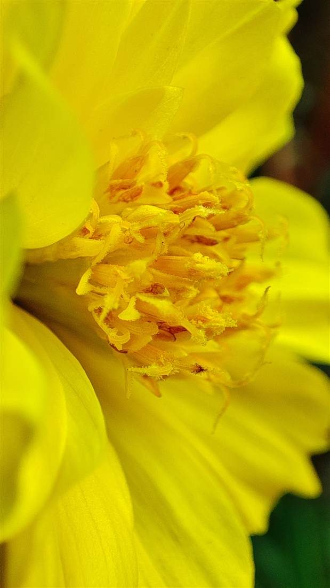
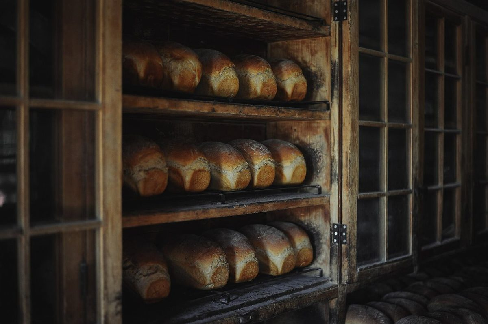
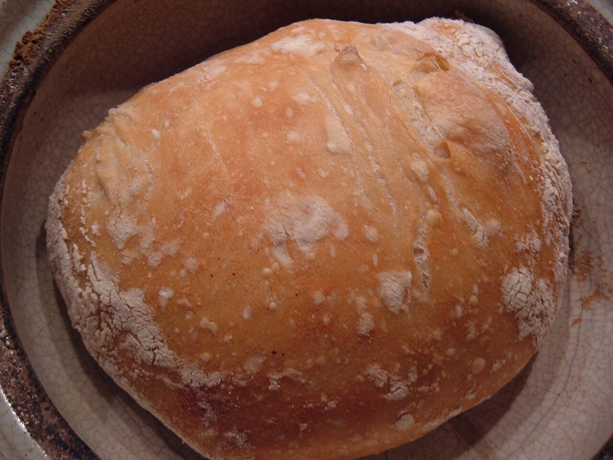

制作側の連想
日除けの縞は、五本。
これは制作側の連想で、お店の理念・由来とは無関係です。店名の由来は分かりません。制作側は「みもざ」から黄色い花を、「てらす」から軒先に張り出す日除け(オーニング)の縞模様を連想しました。そこでこのサイトは、黄色と深緑が交互に並ぶ縞を5本、各ページへの入口にしています。お店にテラスや日除けがあるかどうかは分かりません。
黄色い花の写真
ミモザではない、黄色の花。
ミモザの写真ではありません。黄色の雰囲気をお見せするための、国外・撮影地不明のフリー素材です。


ベーカリーのイメージ
パンの写真(イメージ)
以下の写真は雰囲気を伝えるためのフリー素材です。お店の商品ではなく、提供内容を示すものでもありません。





ご案内
お店のこと(確認できたものだけ)
| 所在地 | 宮城県塩竈市海岸通2-25 直会横丁 内 |
|---|---|
| 電話 | なし |
| 営業時間 | 準備中 |
| 定休日 | 準備中 |
| ご予約 | 準備中 |
| 駐車場 | 準備中 |
| SNS | Instagram @mimosaterrasse |